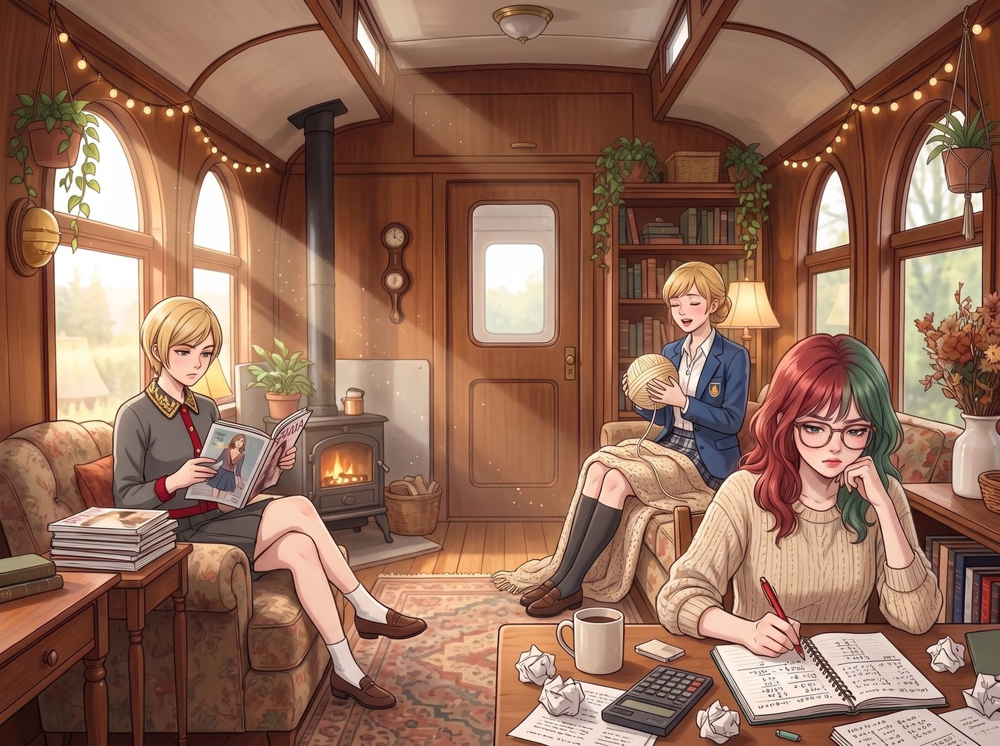
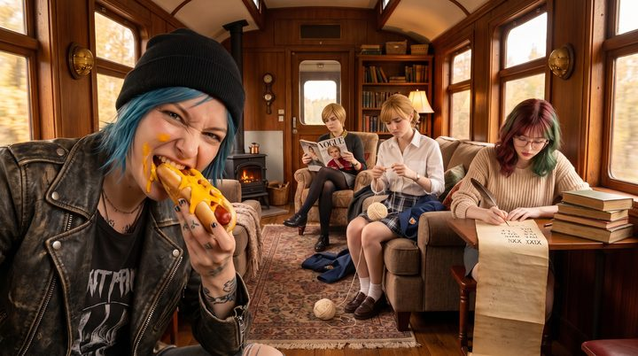

垃圾熊生存日


二號車廂裡，那三位被疫苗腦霧精準降維打擊的精英，依然在各自的角落裡歲月靜好：Victoria 在翻閱第十遍時尚雜誌，Kate 在給毛線團唱搖籃曲，而 Lily 已經把圓周率的羅馬數字算到了小數點後一百五十位，甚至開始用紅筆標註進位錯誤。
而留在現實世界裡的，只剩下兩個肚子餓得咕咕叫的野生千禧世代。
一、雙鯨魚餐廳的拙劣致敬
Max 和 Chloe 站在那套嶄新的頂級智能廚房前，面面相覷。
「所以……」Max 嚥了一口唾沫，「我們中午吃什麼？絕對不吃那些像水泥一樣的軍糧了。」
「放心，Max。雖然我媽在餐廳當了半輩子服務生兼廚師，但我從小在廚房裡耳濡目染，多少也繼承了一點她的藍領烹飪基因。」Chloe 信心滿滿地挽起袖子，走到那個擁有全息觸控螢幕的靜音電磁爐前，試圖展現她作為一家之主的擔當。
不過，自從 Kate 全面接管了車廂的廚房以後，Chloe 那點曾經還能端出一頓像樣早餐、甚至在後院烤肉架上大顯身手的手藝，早就因為長期沒有實戰機會而生疏得差不多了；而 Max，作為一個靠宿舍零食和販賣機度日的宅女攝影師，本來就沒什麼烹飪基礎可言。
這是一場垃圾食物哥布林對決頂級廚具的慘烈戰役。
「我要做我媽最拿手的培根煎蛋捲！」Chloe 豪氣干雲地從冰箱裡拿出幾顆雞蛋和一包培根。
十分鐘後。電磁爐發出了一陣焦急的滴滴報警聲，提示鍋面溫度過高且有焦炭附著。
Max 舉著相機，看著平底鍋裡那坨東西——培根已經縮水成了幾根黑色的、硬梆梆的碳化樹枝；而雞蛋，由於 Chloe 完全不懂得控制火候，也沒有攪拌均勻，現在變成了一張一面焦黑、一面還流著生蛋液的異形荷包蛋。
「這就是妳繼承的基因？」Max 挑了挑眉毛。
「那是因為這見鬼的德國電磁爐沒有靈魂！它不適合我們美式粗獷料理！」Chloe 嘴硬地將那坨黑黃相間的物體鏟進盤子裡，然後打開一瓶番茄醬，像擠牙膏一樣，在上面覆蓋了厚厚一層紅色的醬汁，試圖掩蓋犯罪現場。
Max 嘆了口氣，為了生存，她只能閉著眼睛吃了一口。「嗯……」Max 嚼了兩下，「培根的口感像是在咬生鏽的螺絲釘，但至少番茄醬沒有過期。」
「對吧？我就說能吃。」Chloe 得意地也吃了一大口，然後表情瞬間扭曲，默默地灌了半杯冰水。
二、重工業起司熱壓吐司
到了下午，兩人的飢餓感再次襲來。這一次，Max 決定親自上陣。作為一個在學院宿舍裡摸爬滾打過的學生，她有自己的生存哲學。
她從儲物櫃裡找出了兩片白吐司，中間夾上了厚厚的切達起司片，這是她們能找到的最接近人類正常食物的東西。
「Max，妳打算怎麼烤它？用那個會發出AI語音的無聊烤箱嗎？」Chloe 靠在流理台旁，無精打采地問。
「不。非常時期，要用非常手段。」Max 轉過頭，目光鎖定了工作台上那把 Lily 之前拿出來的、最高溫度達攝氏兩千五百度的戰術金屬熔接器。
Chloe 的眼睛瞬間亮了，彷彿找到了知音：「Max……妳終於也墮落了嗎？」
「我只是懷念宿舍裡用熨斗烤起司吐司的日子。」Max 熟練地戴上電焊護目鏡。
「轟——！」幽藍色的火舌噴射而出。Max 拿著噴槍，對著放在不鏽鋼砧板上的吐司進行了極速的火力掃射。
因為溫度實在太高，吐司的表面在零點幾秒內就發生了劇烈的焦糖化反應，或者說，碳化。Max 手忙腳亂地關掉噴槍，用夾子把吐司翻面。
雖然吐司的邊緣已經燒成了黑炭，但當 Chloe 迫不及待地將它撕開時，裡面那層厚厚的起司，因為高溫的瞬間穿透，竟然融化得恰到好處，拉出了完美的、誘人的金黃色起司絲。
「Max！妳是個天才！」Chloe 歡呼一聲，一口咬下。焦苦味混合著濃郁的奶香，在沒有 Kate 的日子裡，這簡直是米其林三星級的享受。兩個人像難民一樣，站在廚房裡，狼吞虎嚥地分食了這塊散發著危險高溫氣息的重工業起司吐司。
三、底層碳水的終極狂歡
夜幕降臨。經過一天的折騰，兩個人的體力已經耗盡，連動用噴槍的力氣都沒了。
她們坐在客廳的地上，看著沙發上那三個還在腦霧中自得其樂的病患，深深地感受到了一種失去監護人的淒涼。
「Max，如果 Kate 明天還沒恢復正常，我們是不是真的會餓死？」Chloe 抱著膝蓋，有氣無力地說。
「不會的。」Max 從背後拿出了一個藍黃相間的紙盒，宛如舉著某種聖物。
那是一盒卡夫芝士通心粉。這不是什麼軍用儲備，也不是什麼有機無麩質食品。這是美國超市裡最便宜、最沒有營養、充滿了人工色素，但卻是所有美國青少年靈魂歸宿的終極垃圾食物。
「我在 Victoria 的一箱礦泉水後面發現的。估計是送貨的超市小哥不小心掉進去的。」Max 的眼睛裡閃爍著淚光。
十分鐘後，兩個女孩沒有用任何高級餐具。她們直接端著那個煮通心粉的平底鍋，坐在地毯上。鍋裡是煮得軟爛的通心粉，裹著那種亮得不自然的、用粉末衝出來的黃色起司醬。為了增加豪華感，Chloe 甚至還切了兩根不知道放了多久的熱狗腸進去。
「致敬偉大的碳水化合物。」Chloe 舉起手裡的木勺。
「致敬人工色素黃色五號。」Max 舉起另一把勺子。
四、荒謬一天的定格
兩人埋頭大吃。沒有 Kate 的無麩質養生，沒有 Victoria 的卡路里警告，也沒有 Lily 在旁邊計算這頓飯的碳排放量。這是只屬於 Max 和 Chloe 兩個廢柴的、粗糙卻無比真實的垃圾食物狂歡。
吃到一半，Max 放下勺子，拿起放在一旁的寶麗來相機。
鏡頭對準了此刻的二號車廂：背景裡，Victoria 在看過期雜誌，Kate 在給毛線打結，Lily 在紙上寫著羅馬數字。而前景裡，Chloe 嘴裡叼著一根熱狗腸，嘴角沾滿了螢光黃色的起司醬，正對著鏡頭比出一個狂野的中指。
「喀嚓。」
閃光燈亮起，將這荒謬的一天定格。
相紙緩緩吐出。Max 咬著下唇笑了笑，用馬克筆在照片下方寫道：
『阿卡迪亞灣的兩隻垃圾熊，在沒有大人看管的二十四小時內，成功靠著一口平底鍋、一把戰術噴槍和一盒起司麵活了下來。P.S. Kate，我們真的好想妳，快點好起來吧，我們的胃要罷工了。』